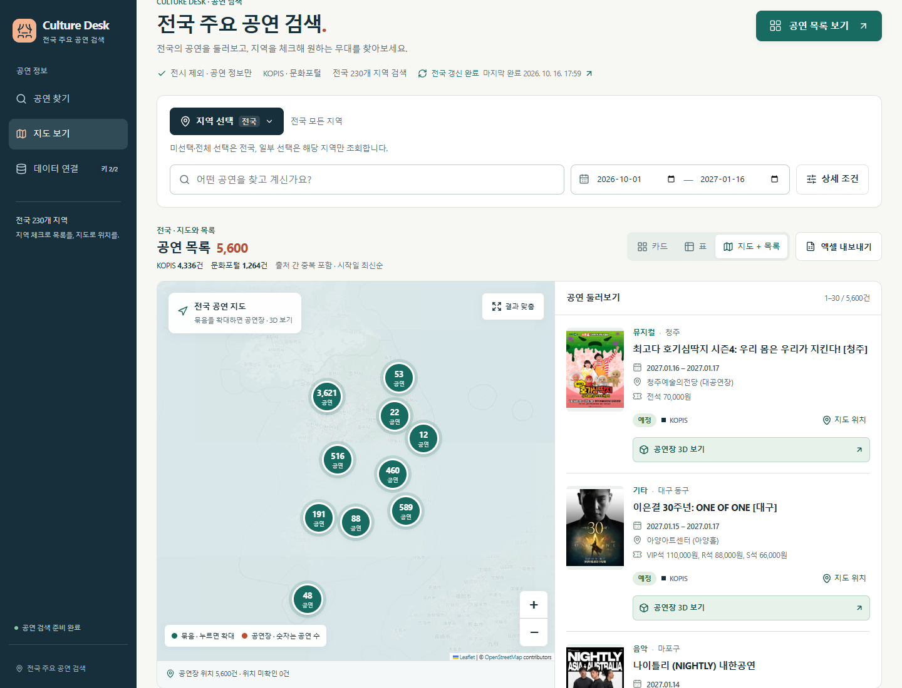

Culture Desk
전국 주요 공연 검색
FIND YOUR NEXT STAGE
전국의 무대를
한 곳에서.
지역을 고르고, 공연을 발견하세요.
전시는 제외하고 공연 정보만.
전시는 제외하고 공연 정보만.
230전국 검색 지역
강릉
부산 해운대구
서울 종로구
안동
여수
제주
KOPIS · 문화포털 공연 정보
01 / REGION
원하는 지역만,
체크하면 끝.
미선택·전체 선택은 전국
일부 선택은 해당 지역만
일부 선택은 해당 지역만
지역 선택전국 230개 지역
✓서울 종로구
✓부산 해운대구
✓강릉
✓여수
✓안동
✓제주
전국 모든 지역공연 찾기 ↗
지역 선택 방식 예시
02 / EXPLORE
지도로 보고,
목록으로 확인.
모인 공연을 넓혀 보고
공연장 위치까지 살펴보세요.
공연장 위치까지 살펴보세요.
지도 + 공연 목록

실제 운영 화면 · 2026.10.16
03 / STAY UPDATED
매일 이어지는
전국 자동 갱신.
사이트를 닫아도 수집은 계속.
갱신 상태와 마지막 완료 시각을 확인하세요.
갱신 상태와 마지막 완료 시각을 확인하세요.
매일 전국 공연 정보 갱신
KOPIS공연 정보
문화포털공연 정보
수집 상태와 완료 시각을 화면에서 확인
원천 API 제공 범위와 응답 상태에 따라 반영됩니다.
CULTURE DESK
다음에 만날 공연,
지금 찾아보세요.
culture-desk.vercel.app
지역 체크부터 지도 탐색까지.